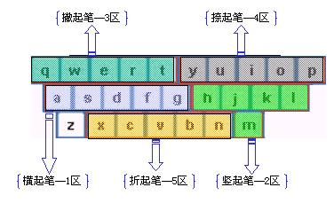
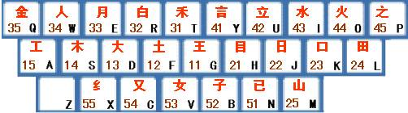
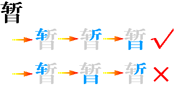
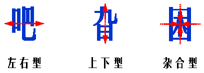
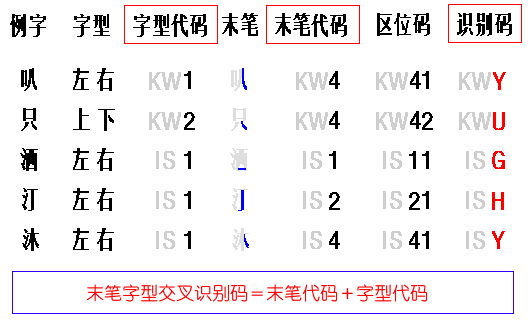
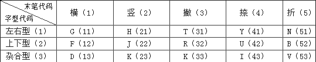
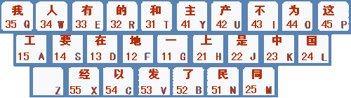

五笔是什么
我们主要讲 86 版的五笔，它的通用性最好。
五笔的基本原理是什么呢？
汉字都是由笔划或部首组成的。为了输入汉字，我们把汉字折成一些最常用的基本单位 – 字根 ，字根可以是汉字的偏旁部首，可以是部首的一部分，甚至是笔划。
取出这引起字根后，把它们按一定的规律分类，再把这些字根依据科学原理分配在键盘上，作为输入汉字的基本单位。
当要输入汉字时，我们就按照汉字的书写顺序依次按键盘上与字根对应的键，组成一个代码，系统根据输入字根组成的代码，在五笔输入的字库中检索出所要的字。
我们已经了解了五笔的基本原理，那么究竟应该如何学习五笔呢？
三个方面，如下：
- 知道键盘上的每个键位对应着哪些字根；
- 学习如何把汉字拆分成五笔字根；
- 输入字根对应的字母，必要时要键入识别码。
键盘分区和区位号
五笔基本字根有 130 种，加上一些基本字根的变型，共有 200 个左右，这些字根分配在键盘上的 25 个键（除 Z 外）上，每个键位都对应着几个甚至几十个字根。
我们知道，汉字有五种基本笔划： 横（提）、竖（竖勾）、撇、捺（点）、折 ，所有的字根都是由这五种笔划组成的。
按照每个字根的起笔笔划，把这些字根分为五个区，如下：
每个区有五个位，按一定的顺序编号，就叫 区位号 （都是从键盘中间开始，向外扩展进行编号），如下：
如何输入这五个基本笔划？
| 笔划 | 一 | 丨 | 丿 | 丶 | 乙 |
|---|---|---|---|---|---|
| 代码 | ggll |
hhll |
ttll |
yyll |
nnll |
字根的输入
键名字根
让我们再来看看上面这张图中标红的字体，每个区位选取了一个最常用的字根作为键的名字，该字根称为 键名字根 。
如何输入键名字根呢？对应的键按四下就行了，如：
| 键名字根 | 王 | 土 | 大 | … |
|---|---|---|---|---|
| 代码 | gggg |
ffff |
dddd |
xxxx |
字根歌
| 31 | T | 禾竹一撇双人立，反文条头共三一 | 41 | Y | 言文方广在四一,高头一捺谁人去 |
| 32 | R | 白手看头三二斤 | 42 | U | 立辛两点六门疒 |
| 33 | E | 月彡（衫）乃用家衣底（爱头豹脚舟字底） | 43 | I | 水旁兴头小倒立 |
| 34 | W | 人和八，登祭头 | 44 | O | 火业头，四点米 |
| 35 | Q | 金勺缺点无尾鱼，犬旁留叉儿一点夕，氏无七 | 45 | P | 之字军，摘礻（示）衤（衣）（之字军盖建道底） |
| —- | — | —————————————— | —- | — | ———————————————- |
| 11 | G | 王旁青头戋（兼）五一（“兼”与“戋”同音） | 21 | H | 目具上止卜虎皮（“具上”指具字的上部） |
| 12 | F | 土士二干十寸雨（可别忘了革字底） | 22 | J | 日早两竖与虫依 |
| 13 | D | 大犬三羊古石厂（羊底龙头套上套下) | 23 | K | 口与川，字根稀 |
| 14 | S | 木丁西 | 24 | L | 田甲方框四车力（“方框”即“口”） |
| 15 | A | 工戈草头右框七（“右框”即“匚”) | 25 | M | 山由贝，下框几 |
| —- | — | —————————————— | —- | — | ———————————————- |
| 51 | C | 又巴马，丢矢矣，（“矣”去“矢”为“厶”） | 54 | N | 已半巳满不出己，左框折尸心和羽 |
| 52 | X | 慈母无心弓和匕，幼无力（“幼无力”即“幺”） | 55 | B | 子耳了也框向上。（“框向上”即“凵”） |
| 53 | V | 女刀九臼山朝西。（“山朝西”即“彐”） |
字根间的结构关系
拆字 是学习五笔的一个重要环节，光背会了字根，有的汉字不知道拆成什么样的字根，也是无法输入的。
我们是由浅入深地开始讲，先谈谈字根间的结构关系 – 单、散、连、交 。
单，就是指这个字根本身就是一个汉字，包括：
- 五种基本笔划（一、丨、丿、丶、乙）；
- 25 个键名字根；
- 字根中的汉字。
散，就是指构成汉字折字根不止一个，且汉字之间有一定的距离，比如“苗”、“汉”字等。
连，是指一个字根与一个单笔划相连，比如“且”、“尺”字等。
交，是指两个或多个字根交叉重叠构成的汉字，比如“本”、“申”字等。
由两个以上字根组成的汉字，称为 合体字 。
其中，对于四个或四个以上的字根的合体字，它的输入方法是按照书写顺序，取第一、二、三、末四个字根的编码。
成字字根
在字根总表中，除了键名字根外，本身就是汉字的字根，称为 成字字根 ，比如“马、手、刀”等。这样的成字字根一共有 65 个，但这些字经常要输入，所以需要掌握其输入方法。
怎么输入呢？
成字字根的输入方法是：先打一下该字根所在的键，再打该字根的第一、第二及最末一个单笔画。
即： 键名+首笔代码+次笔代码+末笔代码。
汉字的拆分
在拆分汉字的时，先要注意按书写顺序来拆分汉字，然后对里面的一些复杂字根，按照它的自然男人界限进行拆分，对界线不明显了，就要按拆分原则进行拆分。
那么，书写顺序、拆分原则，指的都是什么呢？
在书写汉字时，讲究“先左后右，先上后下，先横后竖，先撇后捺，先内后外，先中间后两边，先进门后关门”等。这些都是语文的基本知识，就不多说了。在拆字时，同样要注意书写顺序。
拆分原则，归纳起来有四点：“取在优先，兼顾直观，能散不连，能连不交。”
有些汉字，它们所含的字根相同，但字根之间的相对位置不同，比如“旭”和“旮”等。我们把汉字各部分间的位置关系类型叫做 字型 ，在五笔中，把汉字分为三种字型：左右型、上下型、杂合型。
** 识别码
我们知道，一个合字体的取码规则是这个字的一、二、三、末字根，这只是针对四个字根以上的汉字。如果是这个字只有二个字根或三个字根构成，比如“叭”，这时怎么输入呢？
们试试，在五笔状态下键入“叭”的两个字根的编码，KW，我们发现出现在第一条的是“只”字，原来“叭”与“只”都是由字根“口”和“八”组成的，其编码也是 KW。
由于编码少，信息量不足，会造成重码。
如何消除重码呢？
汉字的笔画有 5 种，字型有 3 种，所以末笔字型交叉识别码共 15 种，也就是每个区位的前三位是作为识别码来用的。
末笔约定
我们在使用识别码输入汉字时，对汉字的末笔有一些约定，需要注意。
首先，为了有足够多的区分能力，对“辶”、“廴”的字和全包围字，它们的“末笔”规定为被包围部分的末笔。为什么要这样约定呢？
例如，如果“辶”为末笔的话，“边”、“连”的识别码都是 V，就无法区分了，所以才这样约定。
其次，对“九、刀、七、力、匕”等字根，当它们参加“识别”时一律用“折笔”作为末笔。
然后，“我”、“贱”、“成”等字的“末笔”，遵循“从上到下”的原则，末笔应该是“丿”。
最后，还有带单独点的字，比如“义”，“太”，“勺”等，我们把点当作末笔，并且认为“丶”与附近的字根是“连”的关系，所以为杂合型，识别码为 43，也就是 I。
我们在学习五笔输入法的过程中，识别码的判断是一个难点，虽然只有很少的字需要加识别码，但为了提高录入速度，还是要掌握这部分内容的。
一级简码
在五笔中，挑出了在汉语中使用频率最高的 25 个汉字，把它们分布在键盘的 25 个字母上，并称之为 一级简码 。
输入一级简码的方法是： 按一下简码字所在的键，再按一下空格。